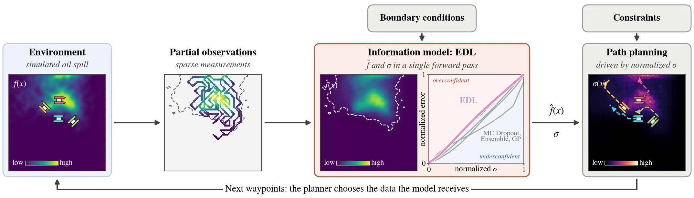
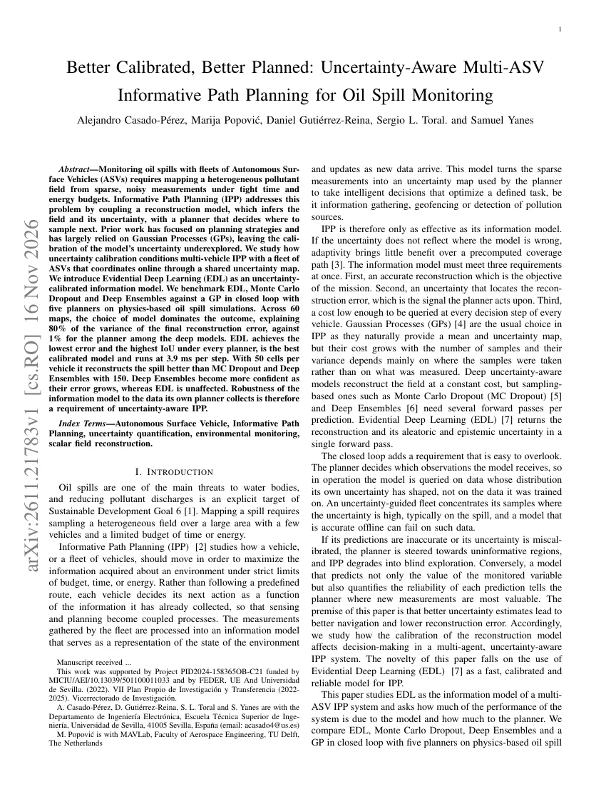
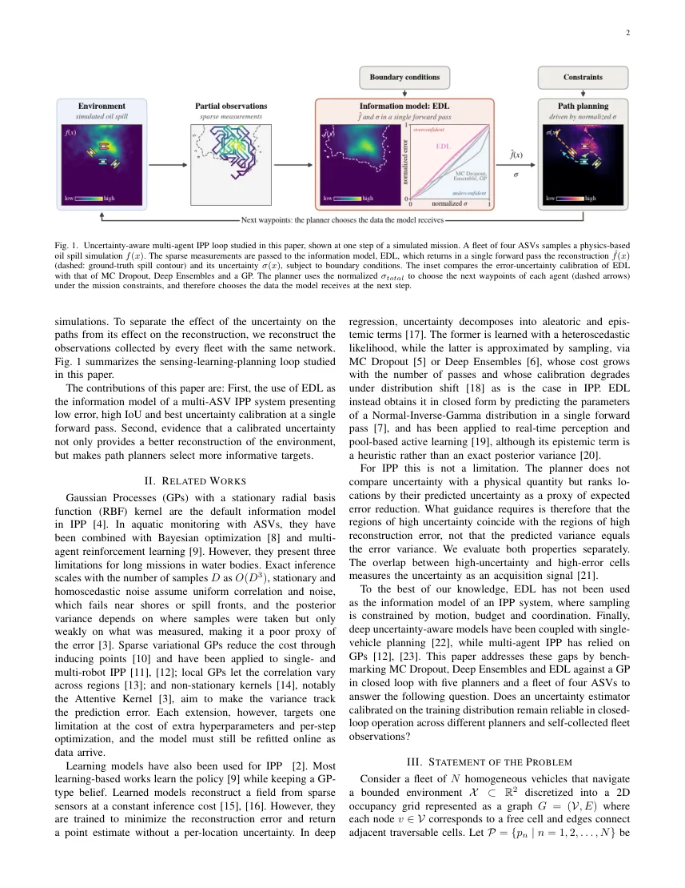

标定得更好，规划得更好：面向溢油监测的多无人艇不确定性感知信息路径规划
Better Calibrated, Better Planned: Uncertainty-Aware Multi-ASV Informative Path Planning for Oil Spill Monitoring
一句话：闭环主动采样的瓶颈不在规划器，而在信息模型的置信度是否可信——模型解释了 80% 的最终误差方差，规划器只占 1%。它给了一个便宜可复现的压力测试（把自己采的观测掩码搬到另一张真值上），可以直接用来验收我们的主动建图/主动标定流程。
variance explained
offline RMSE
inference latency
作者、单位与技术谱系 · Research context
作者与单位
研究脉络
- Learning-based methods for adaptive informative path planning（Popović 等, RAS 2024）团队前作关系：本文把该综述确立的“信息模型 + 规划器”耦合框架作为问题骨架，并把此前少有人处理的“信息模型不确定性标定”单独抽出来做闭环研究。[论文 §1 与参考文献[2]]
- Deep Evidential Regression（Amini 等, NeurIPS 2020）方法基座关系：EDL 的 Normal-Inverse-Gamma 头、闭式认知/偶然不确定性分解与证据正则全部来自这项工作，本文的新意在于把它放进多艇闭环 IPP 而不是单帧回归。[论文 §4-B-3]
- 本篇推进：多艇闭环标定基准与掩码移植本篇推进关系：首次（作者称 to the best of our knowledge）把 EDL 用作 IPP 的信息模型，并在 4 模型 × 5 规划器 × 60 图上做闭环对照，同时用掩码移植把“自采样分布漂移”单独量化。[论文 §2 与 §5-G]
合作网络
- 塞维利亚大学电子工程系团队Alejandro Casado-Pérez → Sergio L. Toral关系：共同署名[arXiv abs]
- TU Delft MAVLab 合作边Marija Popović (TU Delft MAVLab) → 塞维利亚大学团队关系：共同署名[论文首页脚注]
- EDL → 本文信息模型Deep Evidential Regression (Amini 等) → 本文 EDL 信息模型关系：技术依赖[论文 §4-B-3]
单位信息取自论文首页脚注与 TU Delft 官方人员页；技术谱系只记录论文明确引用的前作与方法依赖，不推断未公开的合作或师生关系。
方法本质拆解 · What actually changed
是不是训练了新模型？
是，但只训练信息模型，不训练规划器。三个深度模型用同一 U-Net 主干、同样 50 epoch / batch 16 / Adam，并用 Optuna 各跑 50 次 TPE 调参；EDL 最小化 Normal-Inverse-Gamma 负对数似然加证据正则（λ=1.1×10⁻⁴），MC Dropout 与 Deep Ensembles 最小化高斯 NLL。规划器全部是手工算法，没有任何学习参数。
加了什么先验或约束？
硬约束有三条：同一决策步一个格只能被一艘艇占用、每艇总航程不超过预算 B、以及可航水域掩码（岸线与障碍被排除在损失与评估之外）。不确定性侧的关键设计是把 σ_total 归一化到 [0,1] 再交给规划器，使规划器只看相对高低；EDL 侧用 softplus 约束 ν>0、α>1、β>0 保证 NIG 参数合法。此外假设场静态、定位精确、通信无损，这三条是把问题压成“纯信息采集”的关键简化。
推理/后端做了什么？
推理就是一次前向：U-Net 输出场估计与方差（EDL 闭式给出两项），没有采样、没有逐步重拟合；GP 则相反，每个决策步都要用当前全部观测重优化核超参，成本随观测数增长（<100 格 0.12 s，800–1100 格 10.8 s）。规划端每个决策步在新信息图上重解一次：贪心 <2 ms、RH Orienteering 1.3 s、MCTS 2.5 s，都只执行第一步。
方法本质是什么？
本质是把“不确定性是否是误差的好代理”从离线指标变成闭环可测的量：同一个规划器配上不同的 σ，采样位置随之改变，最终误差的差异就归因于 σ 的质量。作者没有做的是：没有让规划器利用标定后的绝对幅度（全部 min-max 归一化），也没有在真实水面数据上验证，因此结论的边界是“仿真 + 静态场 + 理想通信”。
输入是稀疏带噪观测与共享不确定性图，改变的位置在“信息模型的不确定性估计方式”，靠闭环方差分解与掩码移植把模型质量与规划器质量分离，直接效果是证明标定好的单次前向模型能用更少采样点达到更低重建误差。

桥接价值Bridge
桥接价值
我们的主动建图、主动标定、next-best-view 都有同一个隐含假设：不确定性高的地方就是该去采样的地方。这篇论文把这个假设拆开验证——如果 σ 只是“哪里没采过”的代理，而不是“哪里会错”的代理，那么自适应退化成盲探索。它给出的结论对我们很直接：换信息模型比换规划器更能改变最终精度，规划器只解释 1% 的方差。更实用的是它的压力测试协议：让系统按自己的不确定性去采样，再把同一批采样位置套到另一份真值上，看误差是否随置信度一起下降。
方法与模块Method
方法摘要
任务是在 100×100 网格上用水面无人艇编队重建一个标量场，真值来自拉格朗日粒子模型（随机源点 + 湍流扩散 + 均匀风漂 + 无散度潮流），每格归一化到 [0,1]。信息模型四种：GP（RBF 核，每步用 L-BFGS 重拟合超参）、MC Dropout（p=0.2，30 次前向）、Deep Ensembles（5 个独立初始化）、EDL（输出 Normal-Inverse-Gamma 四参数，闭式给出认知/偶然不确定性）；三个深度模型共用同一个 U-Net 主干，只在不确定性头上不同。规划器五种：Value-Greedy、Uncertainty-Greedy、ε-Greedy、RH Orienteering（多起点贪心 + 爬山）与 MCTS（深度 50、500 次迭代、按局部不确定性自适应分支半径），全部在 receding-horizon 环里只执行第一个动作，并用“按优先级顺序决策”把联合动作空间降到 O(N·|A|)。
可迁移模块
第一是方差分解的做法：把“模型 × 规划器”的全部组合跑完，再用 log 最终误差对两个因子做方差归因，得到可比较的贡献比例，这比只报最好组合更能说明系统瓶颈在哪。第二是 mask transplant 压力测试：保持路径与观测位置不变，把观测掩码套到另一张图的真值上，观察误差与置信度的关系是否随之改变——它把“路径变差”与“重建器在分布漂移下失效”分开。第三是“统一重建器”对照：用同一个重建器去吃不同规划器采到的数据，把引导质量与重建质量解耦，任何主动感知系统都能照搬。

证据Evidence
关键证据与数字
离线（400 张测试图、随机路径 1.2–5% 覆盖率）：EDL RMSE 0.036 / IoU 0.88，Deep Ensembles 0.084/0.61，MC Dropout 0.100/0.57，GP 0.118/0.38（Table I）。闭环方差分解：3 个深度模型 × 5 个规划器 × 60 张图上，模型解释 log 最终 RMSE 方差的 80.2%，规划器 1.1%（IoU 侧 45.4% vs 5.4%）；含 GP 时 69.0% vs 1.9%，交互 6.0%。标定：EDL 的 UCE 0.7–0.9×10⁻³，Deep Ensembles 15.9–71.5×10⁻³，GP 1.9–7.2×10⁻³ 但标定曲线偏离 0.089–0.161（Table II）。预算效率：MCTS 下 EDL 用 50 格/艇到 RMSE 0.031，优于 MC Dropout 与 Deep Ensembles 用 150 格的 0.081 与 0.122；20% 预算时 EDL 已到 0.029，低于其他模型全程最好值。分布漂移：训练样本中位 22% 的观测落在溢油上，闭环里深度引导的编队把 49–82% 的观测压在溢油上，Deep Ensembles 的误差随预算从 0.083（50 格）升到 0.135（300 格）并变得更自信；mask transplant 后 DE 相对 EDL 的超额误差从 0.116 降到 0.064（p=9×10⁻⁶），GP 那条几乎不变（0.042→0.045，p=0.57）。速度：EDL 3.9 ms/步（中位），DE 16.2 ms，MCD 137.3 ms，GP 2,851 ms（Table VI）。
边界与下一步Limits & Next Step
边界与风险
作者明确列出五条假设：初始位置已知、占据栅格已知、标量场在任务期内静止、定位精确且通信瞬时无损、测量只在所有艇到位后开始（排除 transit 阶段）。他们还承认规划器对不确定性图做了 min-max 归一化，因此只用“哪里高”而不用“高多少”，标定幅度的价值没有被利用；未来工作才做动态场、异构传感器、通信约束与实测。我们需要自己核验：一是真值由同一个拉格朗日生成器产生，U-Net 学到的是该生成器的形状先验，换真实溢油形态后 EDL 的优势可能缩小；二是 EDL 的认知项等于偶然项除以 ν（σ²_epi=σ²_ale/ν），作者引用文献自己承认这是启发式而非精确后验；三是 4 艇、60 张图的样本量下“80.2% 方差”是用 log RMSE 做的，极端差模型会放大该比例。
下一步实验
可以直接照抄的最小实验：在我们现有的主动建图流程里，把“不确定性图”分别换成 GP 后验方差与一个单次前向的 EDL 头，规划器保持不变，跑同一批场景比较最终地图误差——如果差距像本文一样主要由模型贡献，那么优化重点应从规划策略转到信息模型标定。第二步：加入 mask transplant 检查，即把系统自己选出的观测位置套到另一份真值上，如果误差下降而置信度不降，说明模型在自采样分布上已经不校准。第三步：把规划器改成使用标定后的绝对不确定性（例如按期望误差降低量分配预算），验证作者留作 future work 的假设是否成立。

